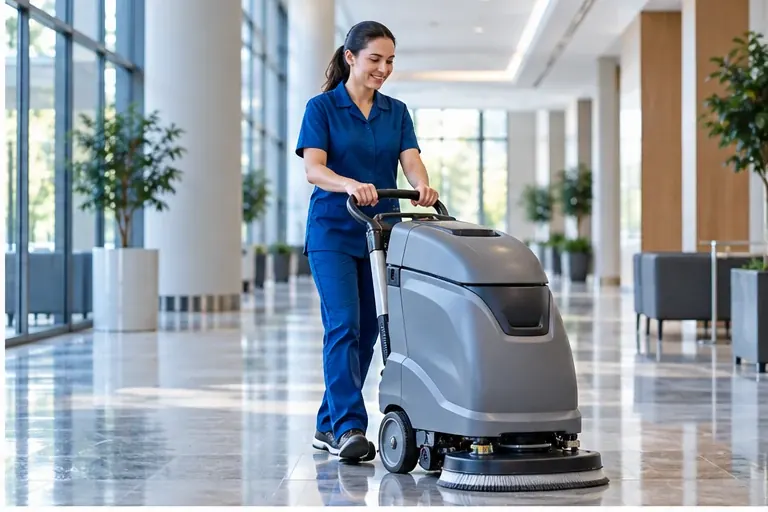

Охрана труда
Оценка рисков на объекте, обучение безопасной работе и обратная связь команды.
Российская Единая Сервисная Компания объединяет питание, комфорт и обслуживание инфраструктуры объекта.

Уточняем цели, требования и ТЗ заказчика. Исследуем условия и особенности площадки.
Определяем формат, состав и организацию услуг, готовим команду и снабжение.
Оцениваем качество обслуживания, обучаем сотрудников и внедряем улучшения.
Сервис опирается на регламенты, подготовку сотрудников и ежедневный контроль.
Оценка рисков на объекте, обучение безопасной работе и обратная связь команды.
Контроль сырья и блюд, хранение и прослеживаемость, гигиена и принципы HACCP.
Предупреждение неисправностей, соблюдение регламентов и устранение причин инцидентов.
Технологические карты, обучение сотрудников, внутренние проверки и корректирующие действия.
Операционное управление, организация питания и техническая эксплуатация — три ключевые компетенции руководителей.
Президент компании
и операционный директор
Комплексные проекты, гостиницы, питание и эксплуатация. Модернизация и антикризисное управление.
Вице-президент
по кейтерингу
Бережливое производство, оптимизация технологий, стандарты питания и развитие проектов.
Вице-президент
по технической эксплуатации
Инженерные системы, энергосбережение и управление техническими службами.
Показатели отражают профессиональный опыт руководителей.